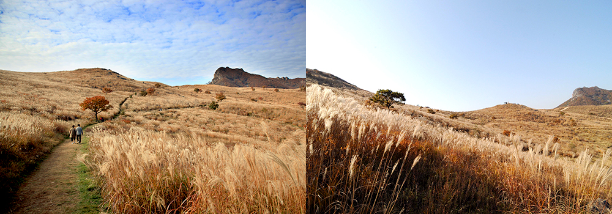

와 제 롤모델이 잡스에요!!! 아이폰 첫 출시되고 나서부터 계속 아이폰 쓰고 있는데 잡스가 너무 그리워요ㅠㅠ 지금은 돈만 벌려고 하는 것 같아서 디자인 발전도 없고ㅠㅠ와 제 롤모델이 잡스에요!!! 아이폰 첫 출시되고 나서부터 계속 아이폰 쓰고 있는데 잡스가 너무 그리워요ㅠㅠ 지금은 돈만 벌려고 하는 것 같아서 디자인 발전도 없고ㅠㅠ와 제 롤모델이 잡스에요!!! 아이폰 첫 출시되고 나서부터 계속 아이폰 쓰고 있는데 잡스가 너무 그리워요ㅠㅠ 지금은 돈만 벌려고 하는 것 같아서 디자인 발전도 없고ㅠㅠ와 제 롤모델이 잡스에요!!! 아이폰 첫 출시되고 나서부터 계속 아이폰 쓰고 있는데 잡스가 너무 그리워요ㅠㅠ 지금은 돈만 벌려고 하는 것 같아서 디자인 발전도 없고ㅠㅠ와 제 롤모델이 잡스에요!!! 아이폰 첫 출시되고 나서부터 계속 아이폰 쓰고 있는데 잡스가 너무 그리워요ㅠㅠ 지금은 돈만 벌려고 하는 것 같아서 디자인 발전도 없고ㅠㅠ
여행에 빠지다
11월에 떠나기 좋은 국내 여행지 추천
억새 옷 입은 합천은빛 물결에 푹 빠지다
글
우현석 (서울경제신문 객원기자 겸 여행 작가)
사진
경상남도 합천군청 제공
-
합천의 가을은 황매산에서부터 시작된다. 차로 정상 바로 아래까지 오를 수 있는 황매산은 대한민국에서 가장 접근이 쉬운 산 중 하나다. 높이 1,108m의 황매산은 경남의 지역 특성상 결코 낮은 산이 아닌 데다 봄에는 철쭉이 흐드러지고, 가을이면 억새군락이 장관을 이룬다. 소백산맥에 속하는 황매산은 영남의 소금강이라고도 불리는데 북쪽 사면에는 황강(黃江)의 지류들이, 동쪽 사면에서는 사정천(射亭川)이 발원한다.
해마다 이맘때면 황매산의 주인은 억새가 된다. 황매산 주차장에 차를 세우고 전망대까지 오르는데 소요되는 시간은 20분 남짓. 전망대에 오르면 사방이 억새군락이다. 아침에는 일출, 저녁에는 일몰의 빛을 받은 억새는 그것들을 다시 튕겨내 산 위에는 흰색 억새 이삭의 향연이 시작된다.
특히 황매산 정상 인근 모산재(767m) 바위산은 합천 팔경 가운데 제8경으로, 뛰어난 절경을 자랑한다. 주민들은 잣골듬이라고도 부르며, ‘신령스러운 바위산’이란 뜻의 영암산으로 부르기도 한다. 모산재는 이름에서 알 수 있듯이 산이라기보다는 고개로 분류된다.
-

황매산
높이 1,108m의 황매산은 경남의 지역 특성상 결코 낮은 산이 아닌 데다 봄에는 철쭉이 흐드러지고, 가을이면 억새군락이 장관을 이룬다.
모산재 등반이 끝난 다음 가볼 곳은 해인사다. 해인사 구경은 절 앞에 펼쳐진 홍류동계곡 탐방과 함께 하는 것이 좋다. 홍류동이라는 계곡의 이름은 가을 단풍이 너무 붉어서 흐르는 물조차 붉게 보인다는 뜻인데 최근 ‘해인사소리길’이라는 새 이름을 얻었다. 송림 사이로 흐르는 물이 기암괴석에 부딪히는 소리에 고운 최치원 선생의 귀를 먹게 했다는 전설이 전해 내려오는 홍류동계곡에는 농산정과 낙화담, 분옥폭포 등 19명소가 있으며, 특히 농산정 맞은편에는 최치원 선생의 친필이 새겨져 있다. 이는 합천 8경 중 제3경이다.
-
홍류동
홍류동이라는 계곡의 이름은 가을 단풍이 너무 붉어서 흐르는 물조차 붉게 보인다는 뜻인데 최근 ‘해인사소리길’이라는 새 이름을 얻었다.
합천의 아이콘 해인사는 신라시대 화엄종의 정신적인 기반을 확충하고 선양한다는 기치 아래, 이른바 화엄십찰(華嚴十刹)의 하나로 세워진 가람이다. 화엄십찰은 신라시대 화엄종을 전교한 10개 사찰로, 이름은 화엄종의 근본 경전인 화엄경의 해인삼매(海印三昧)라는 구절에서 유래됐다. 해인삼매는 있는 그대로의 세계를 한없이 깊고 넓은 큰 바다에 비유한 것으로, 거친 파도 곧 중생의 번뇌 망상이 비로소 멈출 때 우주의 갖가지 참된 모습이 그대로 물 속에(海)에 비치는(印) 경지를 말한다.
-
해인사
합천의 아이콘 해인사는 신라시대 화엄종의 정신적인 기반을 확충하고 선양한다는 기치 아래, 이른바 화엄십찰(華嚴十刹)의 하나로 세워진 가람이다.
해인사는 의상대사(義湘大師, 625~702)의 제자 순응(順應)화상과 순응의 제자인 이정(理貞)화상이 신라 제40대 임금 애장왕 3년(서기 802년) 창건했다. 해인사 경내로 들어가다 보면 해인총림(海印叢林)이라는 현판이 걸려 있는데, 총림은 속세의 대학과 같은 의미로 ‘불교를 가르치고 연구하는 절’을 의미한다. 문화재로는 해인사대장경판(海印寺大藏經板, 국보 제32호), 해인사장경판전(海印寺藏經板殿, 국보 제52호), 반야사원경왕사비(般若寺元景王師碑, 보물 제128호), 치인리마애불입상(緇仁里磨崖佛立像, 보물 제222호), 원당암다층석탑 및 석등(願堂庵多層石塔 및 石燈, 보물 제518호) 등이 남아 있다.
이처럼 볼거리가 풍성한 합천이 최근 수도권에서 한층 가까워지게 됐다. 합천군이 10월 말부터 KTX 김천구미역을 연결하는 합천시티투어를 시작하기 때문이다. 이를 위해 합천군은 KTX 김천구미역과 해인사 등 합천의 주요관광지를 잇는 셔틀버스를 운영하는 한편, 합천시티투어 전용 정류소와 안내판을 설치하고 시티투어 연계 스마트관광 홍보마케팅 체계를 구축했다. 합천을 방문한다면 합천시티투어에 도전해보길 바란다. 합천을 더욱 쉽고, 편리하게 만나볼 수 있게 될 것이다.
TIP서울에서 가는 방법
-
 SRT 수서역 → 김천구미역(합천군 운영 셔틀버스) → 합천(약 3시간 30분 소요)
SRT 수서역 → 김천구미역(합천군 운영 셔틀버스) → 합천(약 3시간 30분 소요) -
 승용차 경부고속도로 → 당진영덕고속도로(청주~상주) → 중부내륙고속도로 → 성주IC(합천, 고령 방면) (4시간 30분 소요)
승용차 경부고속도로 → 당진영덕고속도로(청주~상주) → 중부내륙고속도로 → 성주IC(합천, 고령 방면) (4시간 30분 소요)
-
최고예요
322
-
좋아요
322
-
슬퍼요
322
-
그저 그래요
322
-
화나요
322